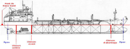
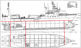
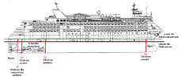

Le compartimentage
Rappel :
Le but principal du compartimentage est de donner à un navire une étanchéité lui permettant de disposer d'une
réserve de flottabilité (et de stabilité) après envahissement d'un ou de plusieurs compartiments.
protection contre la propagation des incendies
A- Dispositions communes :
Le compartimentage de base est constitué des cloisons transversales étanches suivantes:
cloison d'abordage,
cloisons avant et arrière du compartiment machine,
cloison de presse-étoupe (éventuellement confondue avec la cloison AR machine dans le cas d'une machine "toute à l'arrière").
Elles s'étendent verticalement jusqu'au pont de compartimentage :
appelé pont de franc-bord sur les navires de charge et de pêche  
appelé aussi pont de cloisonnement sur les navires à passagers
Définition :
Pont de cloisonnement désigne le pont le plus élevé jusqu’au-quel s'élèvent des cloisons étanches et la muraille étanche à l'eau.
Remarque :
S'il est fait usage de drains ou d'orifices pratiqués dans les pieds de cloisons, dans le but d'assurer l'écoulement de l'eau vers un autre compartiment où se trouve le point d'aspiration, un sectionnement manœuvrable sans avoir à pénétrer dans ce compartiment doit être installé.
Les tuyautages traversant la cloison d'abordage doivent être pourvus de soupapes appropriées manœuvrables à partir d'un point situé au-dessus du pont de travail et la boîte de distribution doit être assujettie à la cloison d'abordage à l'intérieur du coqueron avant.
B- Locaux à risque
Peuvent êtres considérés comme locaux à risque tous les compartiments du navire :
sous la ligne de flottaison.
traversés par des tuyauteries sous pression
exposés en cas de mauvais temps
dans lesquelles fonctionnent des machines thermiques ou électriques
qui contiennent des produits inflammables ou explosifs
C- Les ouvertures
Le navire doit pouvoir rester étanche malgré les ouvertures réalisées afin d'accéder aux différents locaux, cales et soutes.
L'entretien des joints inétanchéité, systèmes de manœuvre et dispositifs de fermeture doit être convenable réalisé.
En mer, les accès qui peuvent l'être doivent être refermé après passage même par beau temps.
Les panneaux de cales du pont exposé et des roofs et château assurent également l'étanchéité. Ils doivent être assez solides pour supporter les paquets de mer.
Porte étanche classe 1 | hublot et contre hublot ils doivent être munis de tapes extérieures ou de contre-hublots intérieurs s'ils sont situés dans des parties exposées. | Les panneaux de cales du pont exposé assurent l'étanchéité et ils doivent être assez solides pour supporter les paquets de mer et d'éventuelles cargaisons en pontée |
D- Les passages de pont et ouvertures dans le bordé
Les dégagement d'air doivent pouvoir être rendus étanches.
Il permettent l'aération des soutes et locaux.
Les trous de sonde doivent être maintenus fermés.
Il permettent le relevé des soutes.
Sur les navires en métal, l'étanchéité au passage de la cloison peut être obtenue par un cordon de soudure dans le cas d'un collecteur continu ou par une manchette à brides, celle-ci étant soudée sur la cloison.
Sur les navires en bois ou en plastique l'étanchéité doit pouvoir être réalisée par des systèmes équivalents.
Les vannes de coque doivent être placées le plus près possible du bordé. La crépine évite l'introduction de corps étrangers de grosses dimensions dans le circuit. Son système de manœuvre doit être parfaitement entretenu et permettre l'isolement du circuit en cas de voie d'eau. Les collecteurs, brides et raccords des circuits eau de mer doivent être régulièrement vérifiés.
Les boites à décharge permettent l'évacuation de liquides à l'extérieur. Elle sont constituées d'un clapet battant à ouverture par pression du liquide (et fermeture sous la pression de l'eau de mer) ou muni d'une manoeuvre à distance pour forcer la fermeture.
E- Les évacuations de pont
Les dalots et sabords de décharge participent à l'évacuation de l'eau sur les ponts.
Les circuits de dalotage passent dans les locaux à l'intérieur du navire. Leur bon entretien participe au maintien de l'étanchéité générale.
Les sabords de décharge permettent un évacuation rapide des paquets de mer embarqués par mauvais temps sur les aires extérieures de travail. Leur bon fonctionnement diminue les risques d'envahissement des locaux qui leur sont contigus à l'intérieur du navire en même temps qu'il diminuent les risques de dégrader la stabilité du navire.
L'entretien du navire, de sa structure,des cloisons, des panneaux, des joints, des passages de coque ou de cloisons étanches revêts donc une importance primordiale dans le prévention des voies d'eau.